#5
November 2023
Linda is 31 years old, single, honest, and very bright.
She graduated in philosophy.
As a student, she was deeply concerned with issues of discrimination and social justice, and also participated in climate change demonstrations.
To answer (anonymously) you can either:
2689 378.Your answers will be displayed on the next slide.
The human tendency to rate a conjunction of two events as more likely than one of the events alone is known as conjunction fallacy.
Why do people get this problem wrong?
You have to meet a stranger in Pisa tomorrow.
You have decided to meet at 3PM, but you have not arranged a meeting place. You have no way of communicating.
Where do you go to maximize your chances of meeting the stranger?
To answer (anonymously) you can either go to www.slido.com and enter the code 4293 177, or scan this QR code.
You have to meet a stranger in Rome tomorrow.
You have decided to meet at 3PM, but you have not arranged a meeting place. You have no way of communicating.
Where do you go to maximize your chances of meeting the stranger?
To answer (anonymously) you can either go to www.slido.com and enter the code 2165 823, or scan this QR code.
Salience
The quality of being particularly important or easy to notice.
People often pay little attention to their consumption choices.
Choice is driven by product features that attract consumer attention, i.e. salient product features.
Let’s look at some evidence of how this process works.
For now, let’s focus on taxation.
A common assumption in economics is that agents respond to tax changes in the same way as they respond to price changes.
Contrary to this assumption, there is growing evidence that individuals are inattentive to some types of incentives.
Chetty, Looney, and Kroft (2009) showed that commodity taxes that are included in the posted prices that consumers see when shopping (and are therefore more salient) have a larger effect on demand.
Read the paper HERE
The experiment was conducted in a supermarket over a three-weeks period.
In this store, prices posted on the shelf exclude a sales tax of 7.375%.
To test if people underreact to the sales tax because it is not included in the posted price, Chetty, Looney, and Kroft (2009) posted tags showing the tax-inclusive price below the original pre-tax price tags.
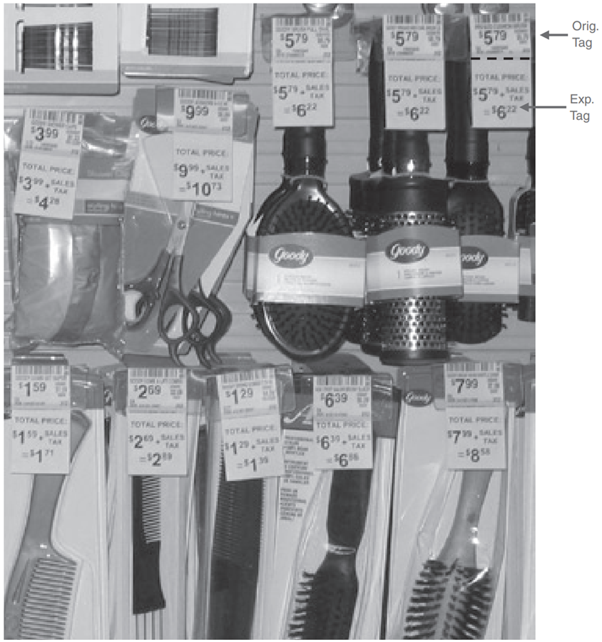
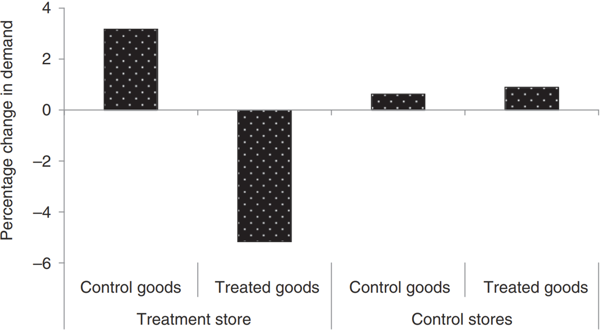
In the second part of their study, Chetty, Looney, and Kroft (2009) looked at the demand for alcohol.
In the US, alcohol is subject to two taxes:
Chetty and co-authors tracked changes in the two tax rates and changes in demand, looking at data from 1970 to 2003.
The result: changes in the excise tax cause a much larger change in demand than changes in the sales tax.
Why do you think this happens?
Can salience be used to encourage positive behaviour without changing economic incentives?
To answer this question, let’s introduce a new definition.
Choice architect
An individual who has the responsibility for organizing the context in which people make decisions.
Nudge
A design of the choice architecture that alters people’s behaviour in a predictable way without forbidding any options or significantly changing their economic incentives (Thaler and Sunstein 2008).
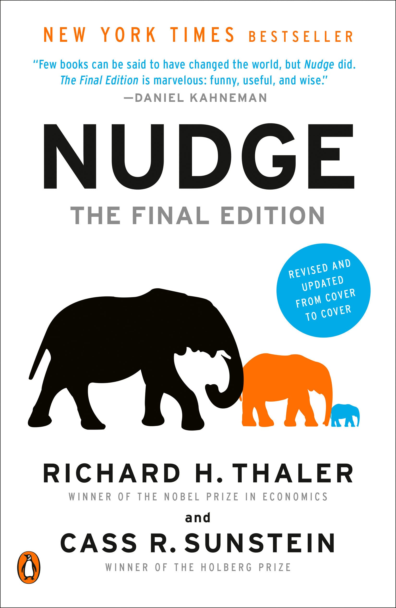
An example:
Is this intervention a nudge?
No, because it relies on monetary incentives to get people to change their behaviour.
Nudges can be used to change the salience of a product or product feature.
Can you give me an example of a salience-enhancing nudge?
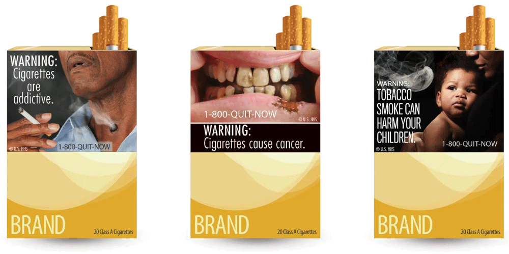
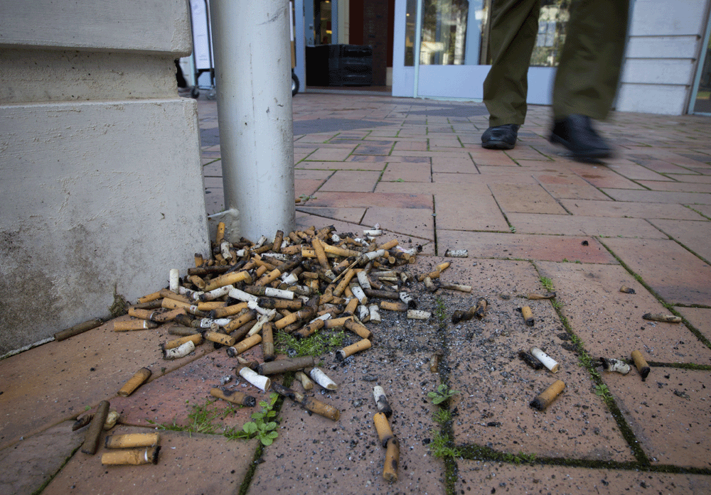 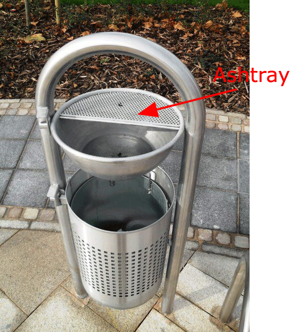
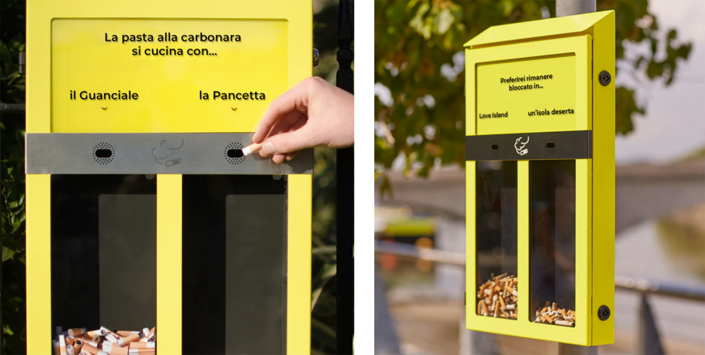
Before
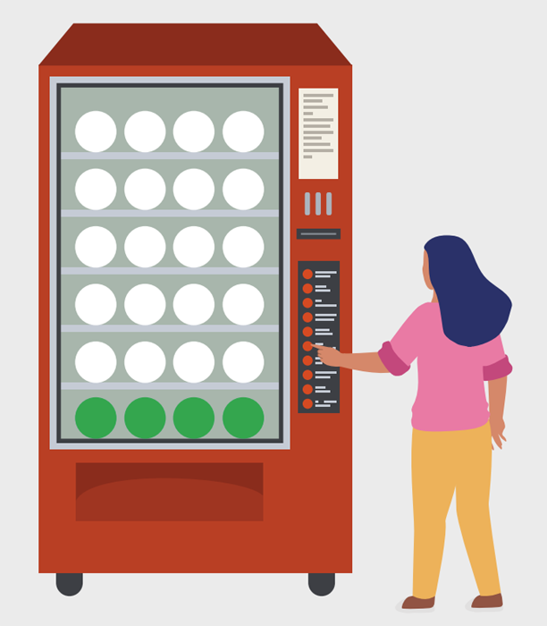
After
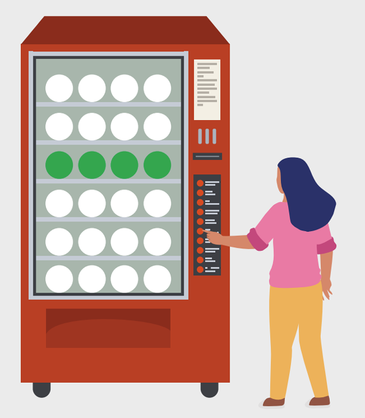
Before
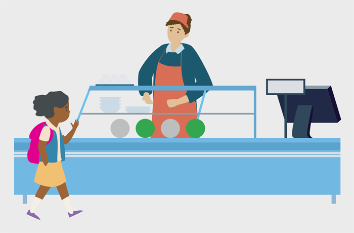
After
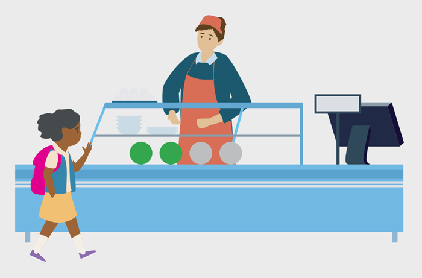
Before
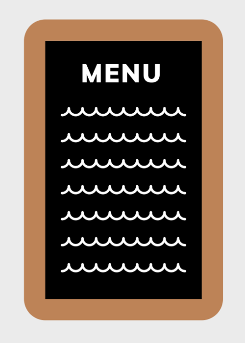
After
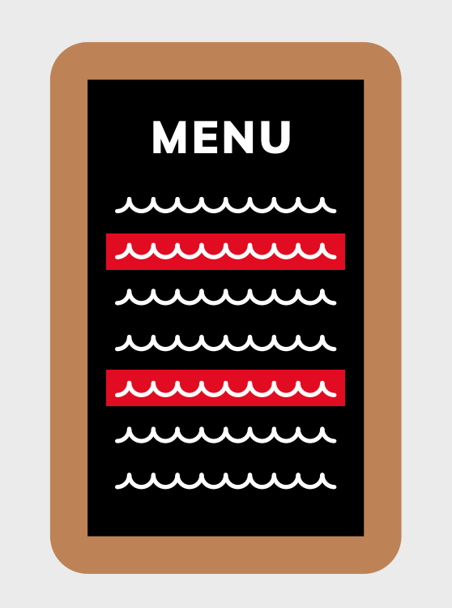
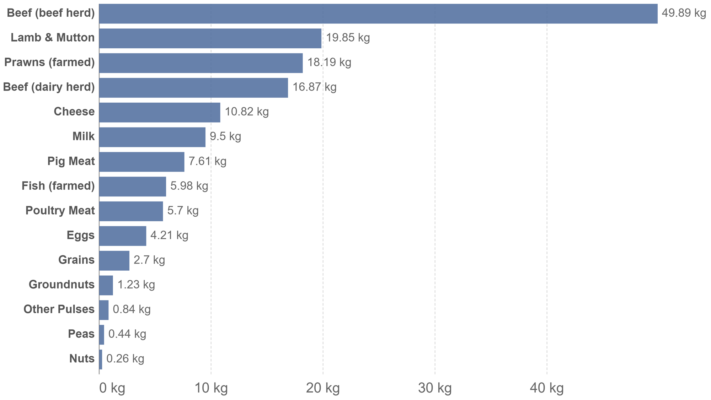
Kurz (2018) conducted a field experiment in two Swedish university restaurants to test whether nudging can increase the consumption of vegetarian food.
The two restaurants were run by the same parent company and served three warm dishes, one vegetarian and two containing either meat or fish.
Read the paper HERE
Daily sales data were collected during the entire 2015-2016 academic year.
Timing:
Menu order
| Treated restaurant | Control restaurant | |
| Period 0 (Baseline) | Position 1: Meat 1 Position 2: Vegetarian Position 3: Meat 2 | Position 1: Vegetarian Position 2: Meat 1 Position 3: Meat 2 |
| Period 1 (Intervention) | Position 1: Vegetarian Position 2: Meat 1 Position 3: Meat 2 | Position 1: Vegetarian Position 2: Meat 1 Position 3: Meat 2 |
| Period 2 (Reversal) | Position 1: Meat 1 Position 2: Vegetarian Position 3: Meat 2 | Position 1: Veg. or Meat 1 Position 2: Veg. or Meat 1 Position 3: Meat 2 |
Visibility
| Treated restaurant | Control restaurant | |
| Period 0 (Baseline) | Meat 1 most visible | All three equally visible |
| Period 1 (Intervention) | Vegetarian most visible | All three equally visible |
| Period 2 (Reversal) | Meat 1 dish most visible | All three equally visible |
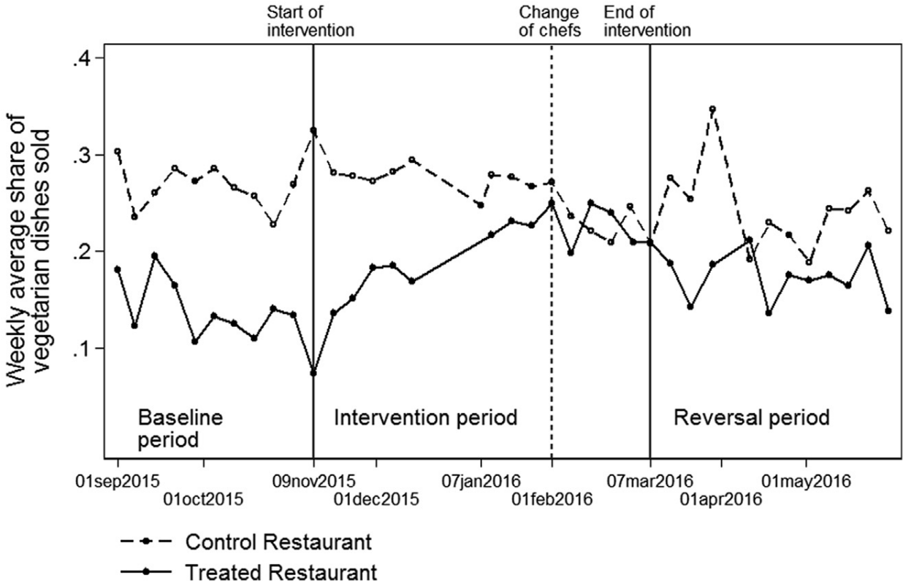
The nudge increased the share of vegetarian lunches sold by an average of 6 percentage points. The treatment effect gradually increased over time.
This change in behaviour was somewhat persistent: at the end of the Reversal period, the share of vegetarian lunches sold remained 4 percentage points higher than before the intervention.
Kurz (2018) estimates that the intervention reduced greenhouse gas emissions emissions from food sales by about 5 percent.
Not all nudges aim to increase or decrease salience.
Think about the policy interventions we have discussed in Module 2. Can you identify any nudges among them?
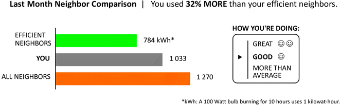
Many companies try to nudge consumers into buying their products and services.
There are also companies that have extended these efforts to getting their employees to work more.
For example, Uber has experimented with video game techniques, graphics, and noncash rewards that can induce drivers to work longer and harder, and sometimes at hours and locations that are less lucrative for them (Scheiber 2017).
Read the article HERE
The app sometimes invites drivers to press a large box if they want the app to navigate them to an area where they have a “higher chance” of finding passengers.
The accompanying graphic seems to indicate that an area’s fares are surging. However, this is not necessarily the case.
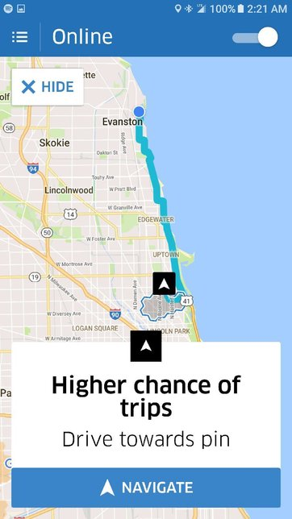
Ludic loops: when drivers try to log out, the app often tells them that they are only a certain amount away from earning a seemingly arbitrary amount for the day, or from matching their earnings from that point a week earlier.
These messages are intended to exploit people’s tendency to set and pursue goals.
The app also shows drivers how many trips they have taken in the current week, how much money they have made, and what their overall rating from passengers is.
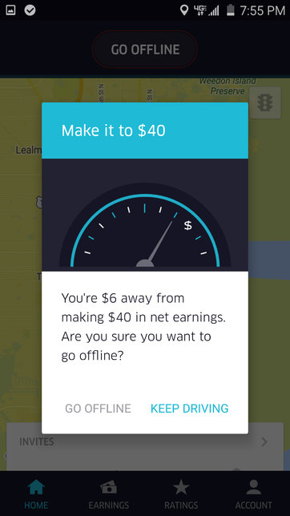
People tend to be governed by inertia and to take whatever option requires the least effort.
Why? Possible reasons include laziness, distraction, and fear.
For any given choice there is a default option, that is, an option that will be selected if the decision-maker does nothing.
Many people tend to stick with the default option, whether it is good for them or not.
A choice architect can influence decision-making by choosing what the default option is.
Before
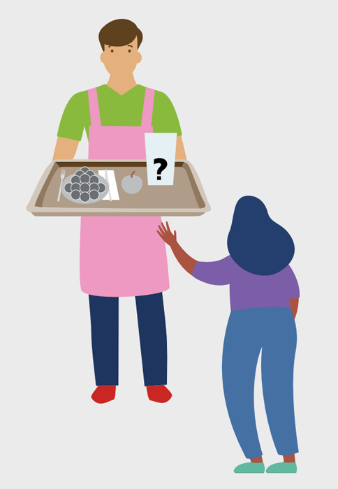
After
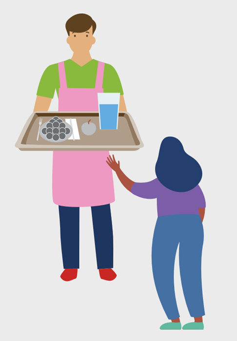
Many Americans spend too much and save too little. In 2005, the US personal savings rate became negative for the first time since 1933.
Possible solution: pension savings accounts that restrict access to funds may help some people overcome the urge to spend.
How can we nudge these people into joining a savings plans?
One option is to automatically enrol workers in a savings plan, that is, change the default from opt-in to opt-out.
Madrian and Shea (2001) examined data from a US company that changed the enrolment and eligibility defaults for its retirement savings plan on April 1, 1998.
Before this date employees were eligible to enrol in the plan only after one year of employment, and had to explicitly choose to enrol.
After the change all employees were immediately eligible to enrol, and new employees were automatically enrolled unless they explicitly chose to stay out.
Read the paper HERE
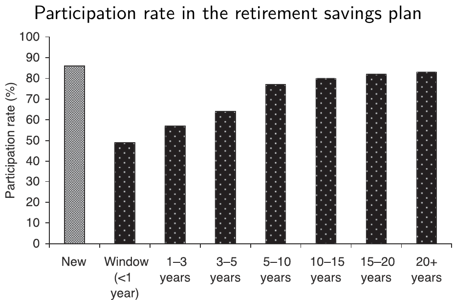
After the default was changed from opt-in to opt-out, there was a substantial increase in employees’ participation in the savings plan.
The participation rate of employees hired after the change is higher than that of any subset of previously hired employees.
The most telling comparison is between employees in the “New” and “Window” groups.